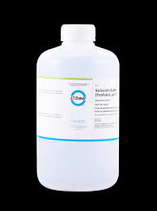

“Solución Buffer de Referencia Certificada (pH 7, 1 L, Transparente) Las soluciones buffers de referencia para pH están listas para ser usadas; fabricadas según especificaciones estrictas con procedimientos de control de calidad que reducen la variabilidad de lote a lote. Puede eliminar el tiempo, ”

Solución
Nota. Las imágenes son ilustrativas y pueden ser distintas al producto real. Los precios son de referencia y pueden cambiar sin previo aviso. Las disponibilidad de productos está sujeta a varios factores por lo que no están garantizadas. Para cualquier duda relacionada con los anteriores puntos, le pedimos dirigirse con su agente de venta.
Comprar